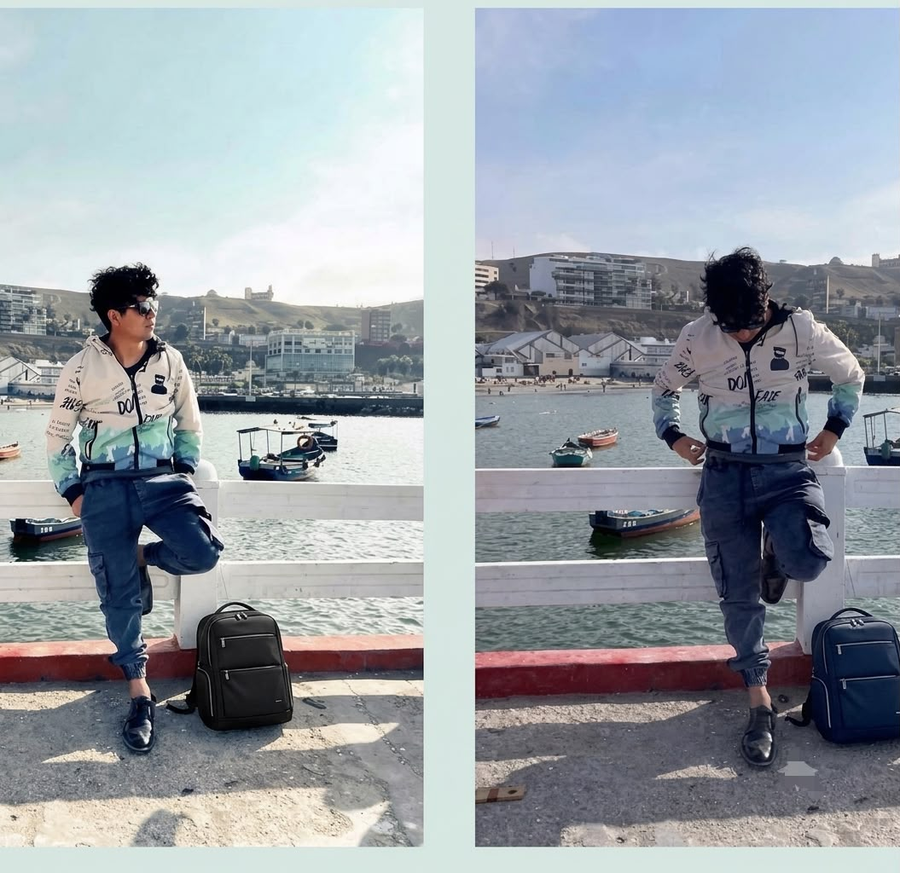
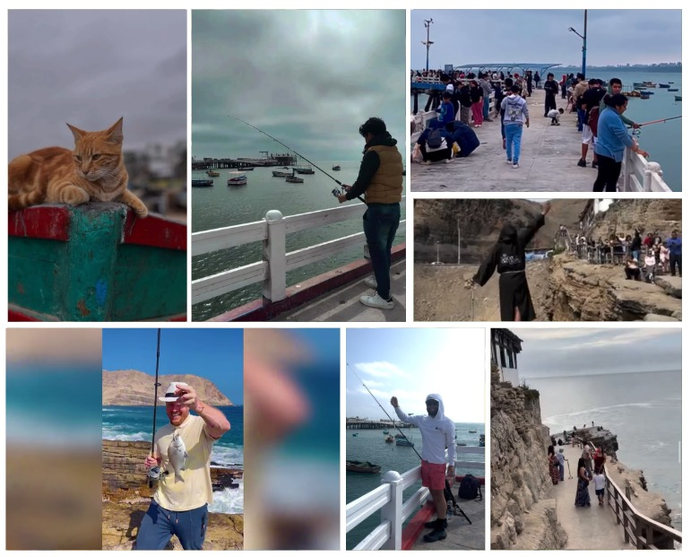
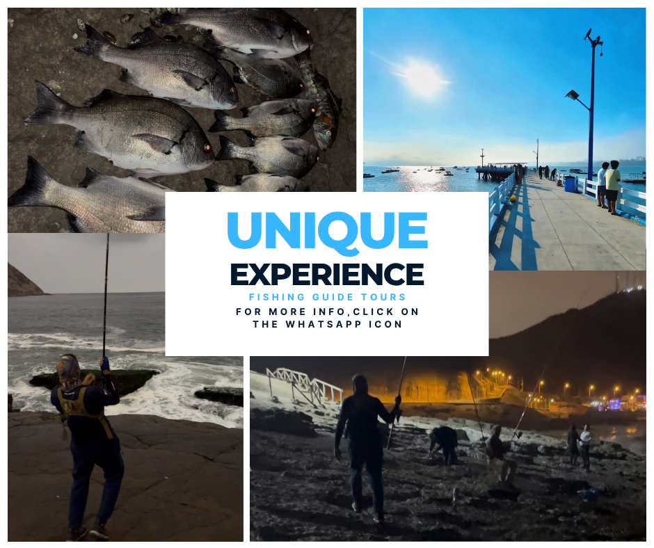
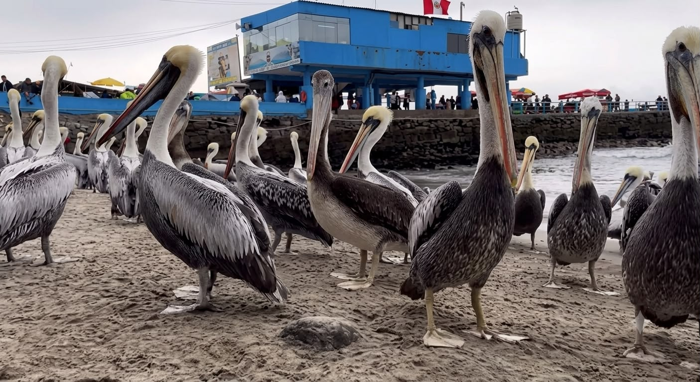
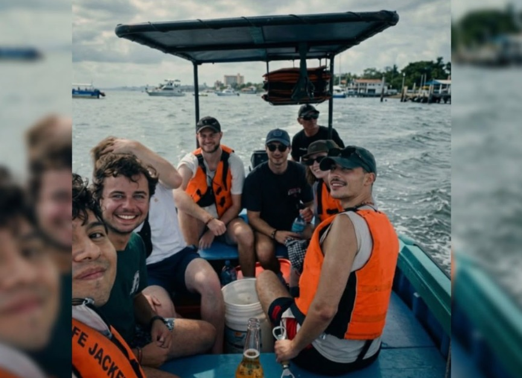
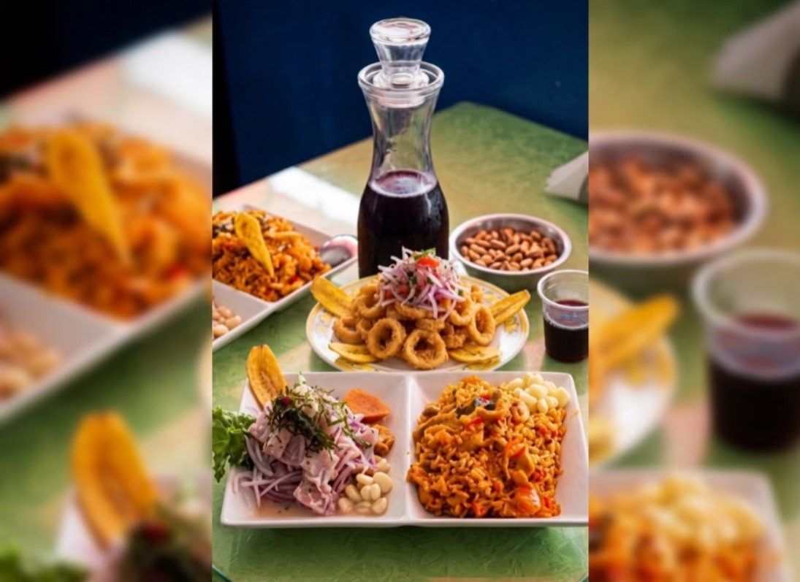
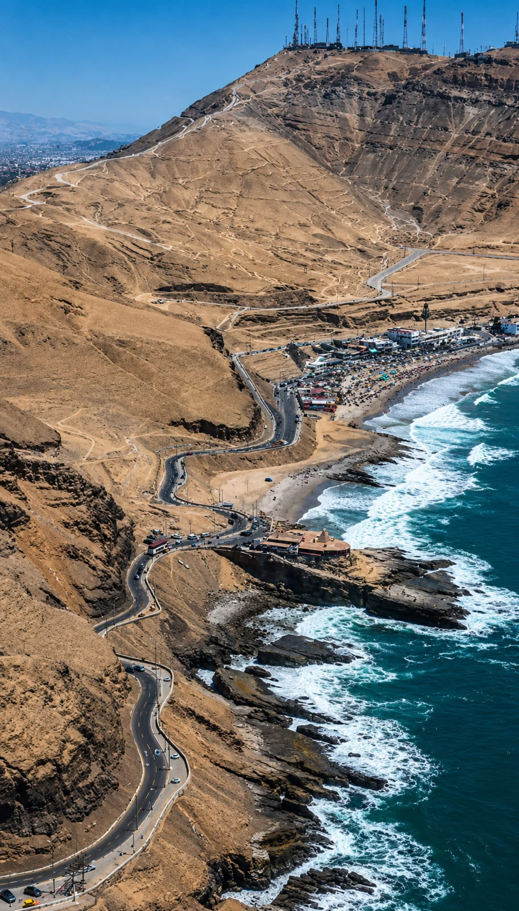

¡Hola! Soy Eddiel. Acompáñame en un auténtico tour de pesca artesanal en el histórico Chorrillos o toma clases personalizadas de español con formación pedagógica internacional.

Conoce a tu anfitrión
Eddiel Martin
Idiomas: español, inglés, portugués, italiano
Me llamo Eddiel Martin (31 años). Soy limeño, educador profesional y anfitrión local que vive en Chorrillos, Lima, Perú.
Durante la última década, he enseñado a cientos de estudiantes en línea y en persona (Colegio Federico Villarreal, tutorías de idiomas y más).
Si quieres lanzar una línea al Pacífico o mejorar tu conversación en español, te ofrezco experiencias altamente personalizadas.

PescaEmpieza en el histórico Muelle de Pescadores de Chorrillos y sal en un colorido bote de madera peruano.
Experiencia local auténtica
Ideal para fotos y cultura
Horarios flexibles a pedido

PescaVive una auténtica aventura costera explorando las aguas de Chorrillos con un guía local.
Pesca en peña, bote o muelle
Guía experto y años de experiencia
Seguridad garantizada y equipo incluido
Cada clase y tour está respaldado por una sólida base de pedagogía, certificación oficial de idioma y antecedentes verificados.
Formación universitaria en educación y metodología.
Nivel de inglés avanzado para una comunicación clara.
Experiencia con niños, adolescentes y adultos.
Chorrillos es un distrito histórico conocido por sus coloridos acantilados, tradiciones marinas y paisajes costeros.

Olas costeras de Chorrillos
Bote artesanal de madera
Prueba delicioso ceviche fresco
Playa La Herradura¿Listo para reservar o tienes preguntas? Completa el formulario y generará un mensaje directo para WhatsApp.